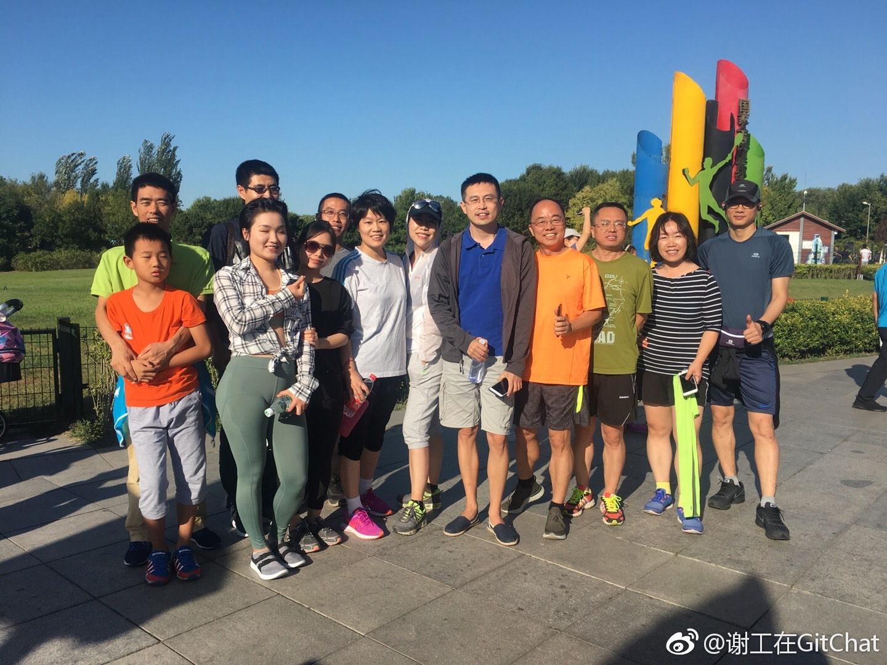
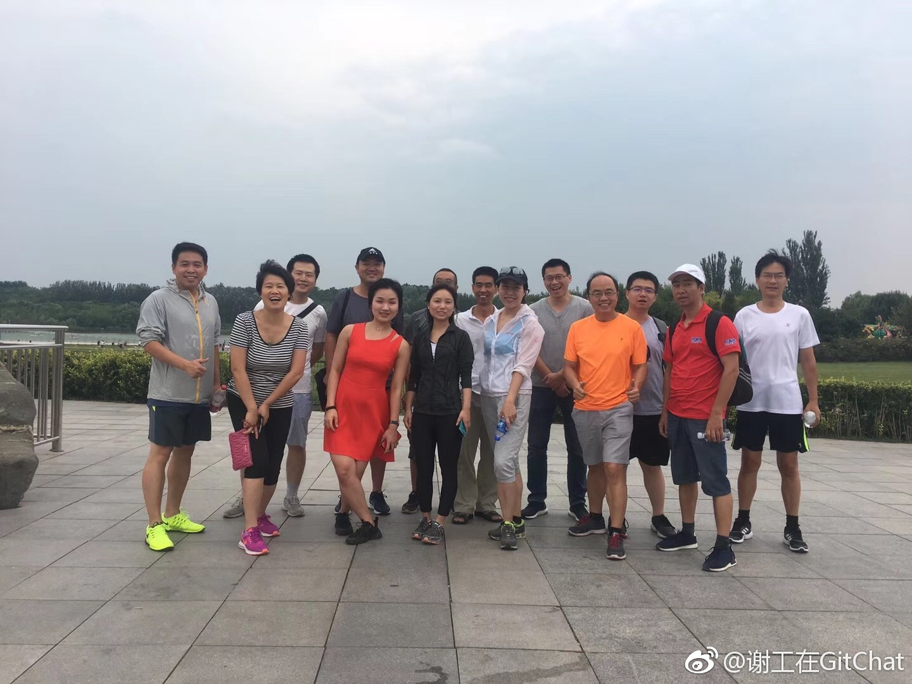
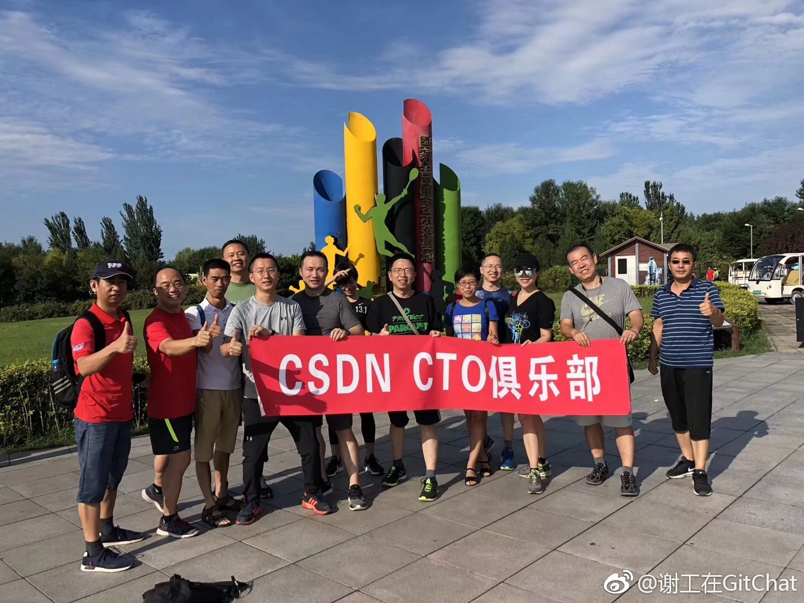
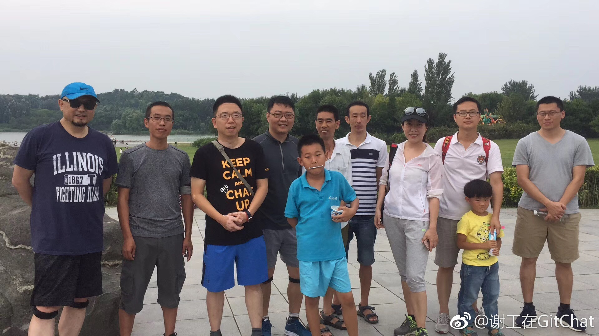

做饭最麻烦的其实是创意和想法，经常不知道做什么好，如果日复一日千篇一律，自己会烦，闺女也不买帐。关注了不少常晒早餐的微博，大多数不容易复制，要么食材复杂，要么太花时间，要么就是不对胃口。最近想着要给#姣姣#好好做早餐，那向业余爱好者学习，不如看专业厨师做的家庭早餐。@爸爸做早餐 在厦门有家自己的餐厅，每日晒一家四口的早餐，还不重样，看起来健康，可口，又温馨。有意思的是这个爸爸也有工作微博，内容也不差，但就是比早餐这个微博，人气差了百倍不止。曲高和寡，在吃饭上也是如此呀。
#创业#我自己跟一些网站的客服沟通，发现不少是一问三不知，有些答案其实网站就有，还有一些问题也能搜索到，但是你问个大活人时，TA就是什么都不懂一样。这样水平的客服，其实还不如放个智能机器人。目前市场上的一些AI机器人，做得已经相当好，基本能回复90%的用户问题。客服要进化为专业顾问，并且能提供情绪价值，未来才有出路。
我以为大公司会官僚，服务会差，小#创业#公司必须要提供特殊价值才能留住客户，服务一定好。其实错了，服务好坏跟公司大小无关，跟企业运营效率和员工素质有关。最近开了大大小小的服务，跟阿里云的交互，几乎没得毛病挑，反响非常快，涉及到密码登录这么紧急的问题，马上会有工作人员打电话来解决。与之对照的是创业公司51社保，用下来真正一肚子气。其实购买的两者服务都是跟政府有关的事情，一个是网站备案，一个是社保。我当然知道跟政府接口方面的事情，向来不容易，拖沓难免。但既然提供商业服务，这个难就不能让客户来承担，企业自己要消化掉，不然你赚的是什么钱呢？
被谢工这么一表扬，以后都不好意思找借口偷懒了。@谢工在图灵和GitChat:每周六下午四点奥森公园南门十公里健步走，已经坚持了2个月了，欢迎大家一起锻炼起来！@Ada李力 居然每次都在，厉害了👍 